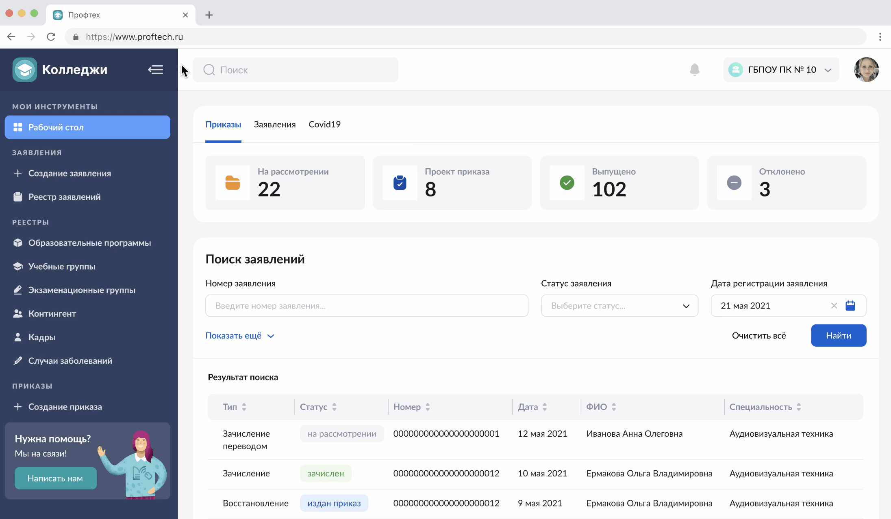
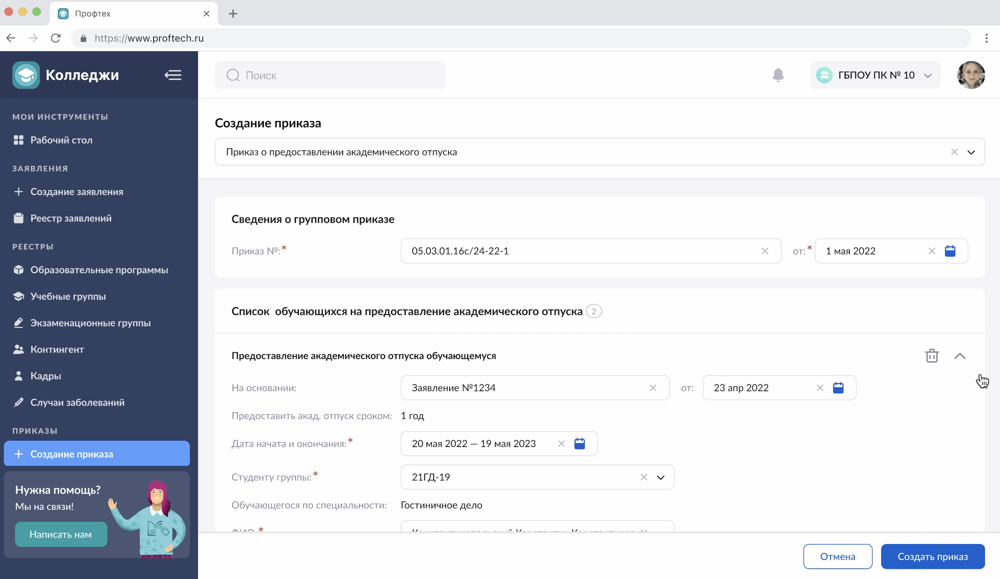
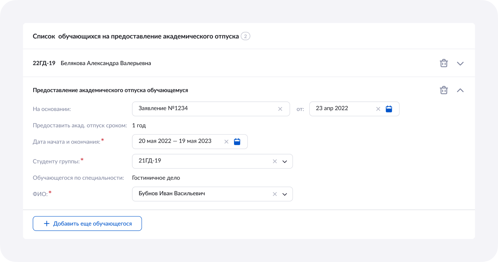
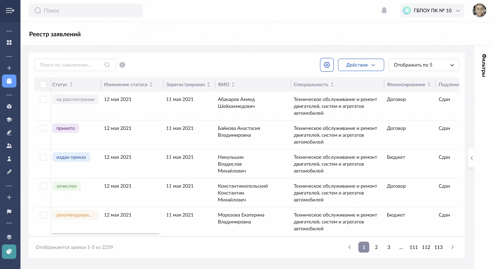
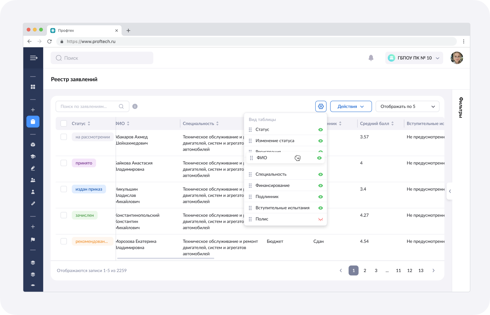

Colleges
Web
B2B
2023
Colleges is a service for administrative work in public educational institutions.
The business goal was to align the product with the Moscow Electronic School visual style.
Moscow Electronic School is a project of the Department of Education aimed at digitalizing education. The service handles student enrollment, transfers, and graduations, generates numerous reports, creates educational programs and exam groups, and much more.
DAU
1K+
Moscow colleges
170
My role
Worked end-to-end on the project: from discovery and problem definition through design to final release
• Conducted interviews with users and the business.
• Moved on to design and redesign.
• The key improvement was rethinking large tables.
• Released to all Moscow colleges.
Administrator's Pain Points
Outdated and unattractive interface of the service
No option for precise editing of information
Huge and unwieldy tables
Non-intuitive layout of elements
The main insight
The service is a working tool familiar to users. A careful redesign and a revision of table handling are needed.
Navigation
An important change was the sidebar, which made switching between sections easier and faster

Block tables
Orders are created for a large number of study groups. Filled cards can be collapsed, which helps maintain a compact view


Tables
The solution for huge tables was the ability to customize column order and freeze columns while scrolling


Result
Released to all Moscow colleges.
Redesign and update
The pilot version showed that users embraced the new service and noted improvements
8,9 / 10
UX score based on user surveys.
This was achieved because the changes were subtle but significantly improved the quality and speed of work.
This was achieved because the changes were subtle but significantly improved the quality and speed of work.
The service gained an aesthetically pleasing and user-friendly design